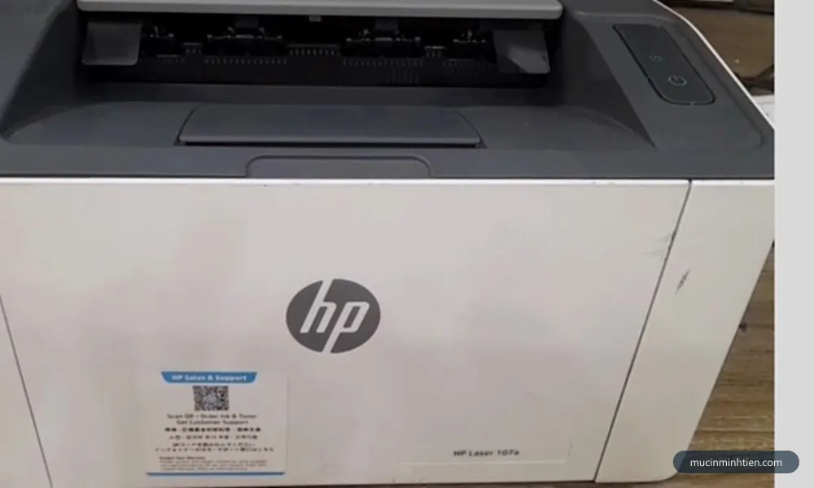
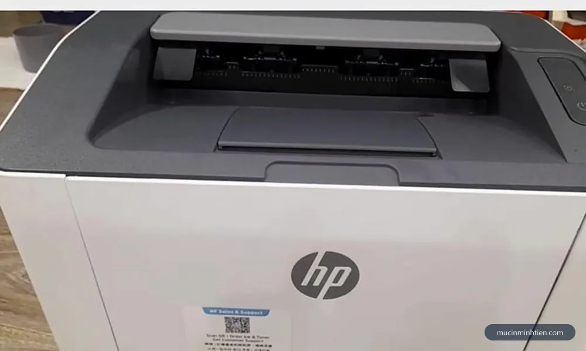
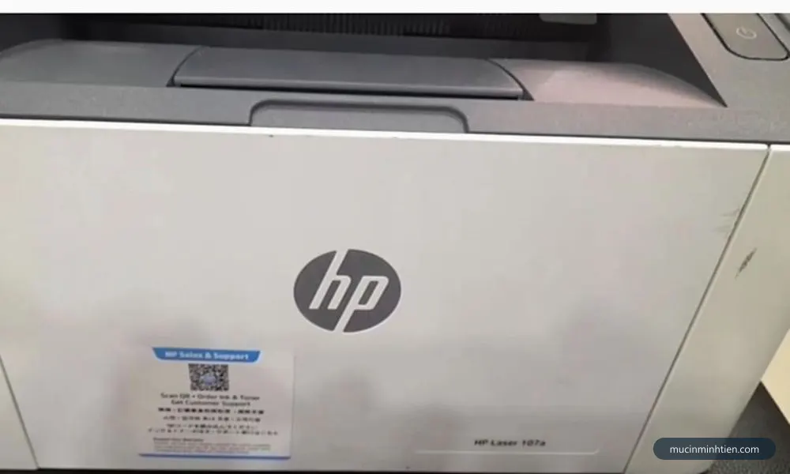
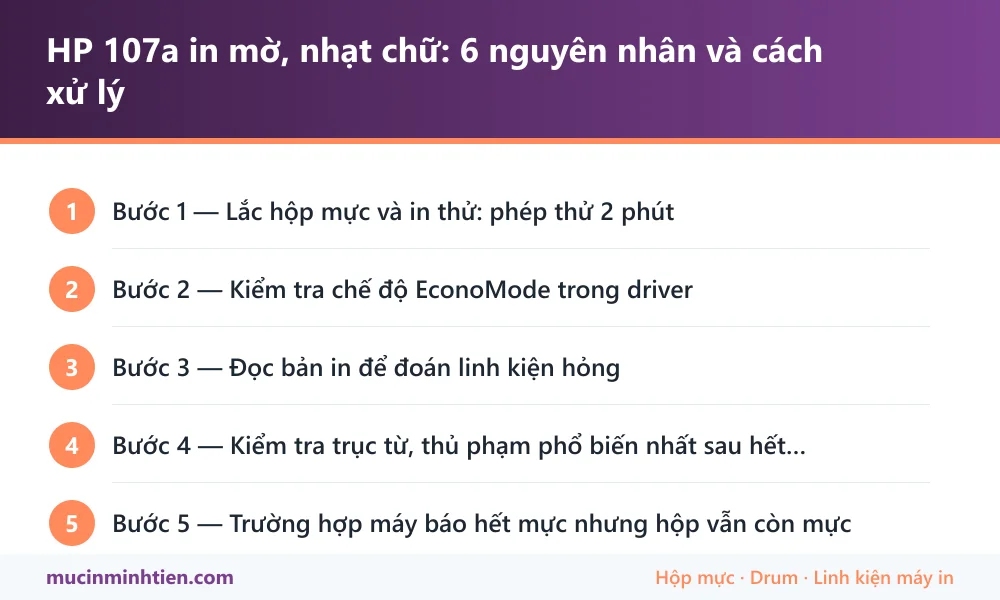

HP 107a in mờ, nhạt chữ: 6 nguyên nhân và cách xử lý
Bước 2 — Kiểm tra chế độ EconoMode trong driver
Đây là nguyên nhân bị bỏ qua nhiều nhất, và cũng là nguyên nhân sửa nhanh nhất vì không tốn đồng nào. EconoMode giảm lượng mực bám lên giấy để tiết kiệm, hậu quả là chữ xám nhạt đều toàn trang.
- Mở Settings → Printers & scanners, chọn máy HP 107a, bấm Printing preferences.
- Vào tab Paper/Quality (một số bản driver để ở Advanced).
- Bỏ tick EconoMode, đặt Print Quality về mức mặc định hoặc FastRes 1200.
- Bấm Apply → OK rồi in thử lại.
Dấu hiệu nhận biết đúng bệnh này: chữ nhạt đều nhau trên toàn trang, không có vệt, không có mảng đậm mảng nhạt. Nếu bản in nhạt loang lổ thì nguyên nhân nằm ở phần cứng, đọc tiếp.

Bước 3 — Đọc bản in để đoán linh kiện hỏng
Hình dạng chỗ nhạt cho biết khá chính xác bộ phận nào đang có vấn đề. Đây là bảng tra chúng tôi dùng khi nhận máy tại xưởng:
| Biểu hiện trên bản in | Bộ phận nghi ngờ | Hướng xử lý |
|---|---|---|
| Nhạt đều cả trang, chữ xám mỏng | Hết mực hoặc EconoMode | Nạp mực / tắt EconoMode |
| Nhạt dần từ trái sang phải hoặc ngược lại | Trục từ mòn không đều | Thay trục từ |
| Một dải dọc nhạt hẳn, phần còn lại bình thường | Trục từ bám bẩn hoặc drum mòn cục bộ | Vệ sinh, nếu không hết thì thay |
| Nhạt kèm sọc đen dọc lặp lại đều | Drum xước | Thay drum |
| Nhạt kèm lem mực ở mép trang | Gạt mực mòn hoặc mẻ | Thay gạt mực |
| Nhạt chỉ ở nửa cuối trang dài | Mực bột kém, không bám đủ | Đổi loại mực nạp |
Nếu bản in của bạn có sọc đen chứ không chỉ nhạt, đọc thêm bài máy in bị sọc đen dọc: 5 nguyên nhân và cách khắc phục để tách bạch hai vấn đề.

Bước 4 — Kiểm tra trục từ, thủ phạm phổ biến nhất sau hết mực
Trục từ (magnetic roller) là ống kim loại phủ lớp cao su tối màu, có nhiệm vụ hút mực bột lên rồi truyền sang drum. Sau khoảng 3–4 lần nạp mực, lớp phủ này mòn và mất từ tính, mực bám lên ít đi và bản in nhạt dần dù hộp vẫn đầy mực.
Cách kiểm tra bằng mắt: rút hộp mực ra, nghiêng dưới ánh đèn và nhìn dọc thân trục. Trục còn tốt có màu đồng đều, hơi bóng mờ. Trục đã hỏng thường có vệt sáng bóng ở giữa (chỗ tiếp xúc giấy nhiều nhất), hoặc lốm đốm loang màu.
Chi phí thay không cao: trục từ cho hộp mực HP 107A hiện ở mức 45.000đ. So với việc mua hộp mực mới, thay riêng trục từ tiết kiệm hơn nhiều nếu vỏ hộp và drum còn tốt.
Bước 5 — Trường hợp máy báo hết mực nhưng hộp vẫn còn mực
Đây là câu hỏi chúng tôi nhận nhiều nhất về dòng 107a. Hộp mực W1107A có chip đếm số trang: in đủ định mức là chip báo hết và máy dừng, hoàn toàn không đo lượng mực thật còn lại. Nạp thêm mực mà không xử lý chip thì máy vẫn báo hết.
Cách xử lý là thay chip mới đúng mã, giá khoảng 35.000đ. Sau khi thay, bộ đếm về 0 và máy in tiếp bình thường. Chi tiết cách máy báo lỗi và ý nghĩa đèn chấm than có trong bài cách reset máy in HP và xử lý lỗi chấm than HP 107a, 107w.
Lưu ý: chip là linh kiện điện tử nhỏ gắn ở đầu hộp mực, tháo lắp cần đúng chiều và đúng vị trí tiếp điểm. Nếu không quen tay, nên để kỹ thuật viên làm kèm lúc nạp mực thay vì tự cạy ra.

Bước 6 — Khi nào nên dừng sửa và thay hộp mực mới
Nạp mực là phương án tiết kiệm, nhưng có giới hạn. Nên chuyển sang hộp mực mới khi gặp một trong các dấu hiệu sau:
- Hộp đã nạp từ 4–5 lần trở lên và chất lượng in giảm rõ sau mỗi lần.
- Bản in vừa nhạt vừa có sọc, tức drum và trục từ hỏng cùng lúc — cộng tiền hai linh kiện đã gần bằng hộp mới.
- Vỏ hộp nứt, hở khiến mực rơi vãi vào lòng máy.
- Máy dùng cho công việc quan trọng, cần bản in ổn định tuyệt đối.
Giá tham khảo hiện tại: hộp mực HP 107A (W1107A) chính hãng 230.000đ, drum 107A 80.000đ, mực đổ 50.000đ, chip 35.000đ, trục từ 45.000đ. Xem toàn bộ mã liên quan bằng công cụ tra hộp mực theo model máy in hoặc mở bảng giá đầy đủ.
Cách kéo dài tuổi thọ bản in đậm
- Đừng để máy nghỉ quá lâu. In vài trang mỗi tuần giúp mực không vón và trục không bị chai một điểm.
- Không lắc hộp mực quá thường xuyên. Lắc là biện pháp cấp cứu, lắc nhiều làm mực bám lệch và mòn trục nhanh hơn.
- Chọn mực nạp đúng loại. Mực bột quá mịn hoặc quá thô đều làm bản in nhạt sớm. Xem cách chọn mực in đúng máy và tiết kiệm.
- Vệ sinh khoang hộp mực khi thay. Bụi mực tích tụ làm bẩn cụm quang, khiến bản in mờ dù hộp mực còn tốt.
